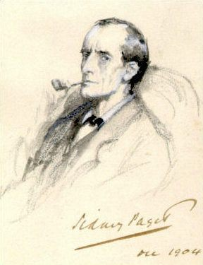

Overview
Sherlock Holmes was created by Arthur Conan Doyle. Sherlock Holmes is a dectective known for his skills in deciphering the evidence and finding the culprit. Sherlock first appeared in A Study in Scarlet in 1887. He has had many books, stories, movies, and shows made about him. Most of his novels were set in the Victorian or Edwardian eras and narrated by Sherlock's friend, Dr. John H Watson, who often went along with Sherlock during his investigation.
Sherlock is one of the more popular fictional detectices as there are over 25,000 stage adaptations, films, televison, and publications about the detective. Guiness World Records lists him as the most portrayed human character in film and television history.
History
The creator of Sherlock Holmes, Sir Conan Doyle had written 4 novels and 56 short-stories with Sherlock Holmes. Majority of these were narrated by Dr. Watson, 2 were narrated by Holmes, and 3 were written in third-person. These stories first appeared in magazine serilization over 40 years.
Inspiration
Edgar Allan Poe's Auguste Dupin is known to be the first modern detective story in English fiction. Monsieur Lecoq was also popular when Doyle had started writing Sherlock. Doyle had said that Holmes was inspired by an actual surgeon, Joseph Bell, who was a surgeon at the Royal Infirmary of Edinburgh. Doyle had worked for Joseph as a clerk.